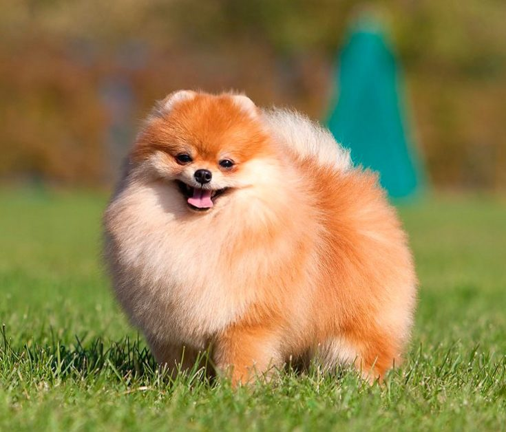
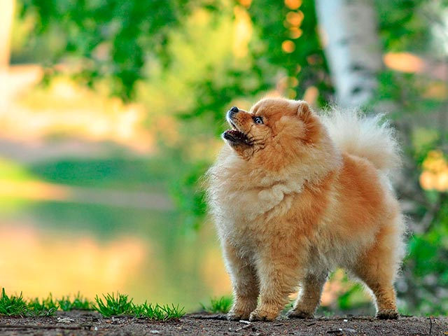

Померанский шпиц
1. Введение
Эта порода собак больше известная под названием померанец и представляет декоративный и невероятно популярный вид собак. Некоторые кинологические федерации рассматривают померанца как разновидность немецкого шпица, а в некоторых других рассматривают как отдельный, самостоятельный вид.
Померанский шпиц выглядит как детская игрушка. Этот пушистый колобочек станет верным другом и звонким лаем скрасит самый пасмурный день. Померанские шпицы были выведены в результате селекционной работы. Удалось получить миниатюрных собак с милой, очаровательной внешностью. Маленьких собак декоративных пород удобно содержать и в просторном загородном доме, и в небольшой городской квартире. Они становятся хорошими компаньонами и верными друзьями.
2. Характер и образ жизни
Характер померанского шпица и его особенности лучше изучить до появления щенка в доме. При первом взгляде они скромны и послушны, но не все так просто. Характер представителей породы померанский шпиц по описанию заводчиков неспокойный, энергичный, коммуникабельный, не всегда тихий и кроткий.
Порода характеризуется еще и тем, что шпицы легко поддаются дрессировке. Если этого не сделать, то без дрессировки отдельные особи становятся упрямыми и своенравными, другими словами – неуправляемыми. Померанский шпиц имеет врожденную склонность к доминированию, поэтому без дрессировки и надлежащего воспитания собака способна «качать права» и может подчинить себе других домашних любимцев, в том числе и членов семьи. Некоторые особи могут проявлять эгоизм: при появлении у хозяина другого питомца шпицы способны проявлять агрессию и недовольство.
Эти не большие животные отличаются веселым и весьма игривым нравом. При этом они имеют отличный слух и преданы своему хозяину. Не смотря на привлекательный, декоративный внешний вид эта порода характеризуется как стойкая, имеющая сильный характер. Несмотря на свои относительно небольшие размеры, померанец запросто способен постоять не только за себя. При этом домашний любимец никого и ничего не боится и даже весьма отважный.
Померанцы всегда находятся в движении и весьма активные, поэтому любят длительные прогулки и подвижные игры. Физические нагрузки нужны для животного не только в качестве развлечения, но и для поддержания здорового образа жизни. При этом активность и энергичность шпица ни в коей мере не надоедает хозяину и не доставляет никаких хлопот. Эти собаки отличаются своей послушностью и сообразительностью, при этом их поведение направлено на то, чтобы понравиться своему хозяину.

Породы собак: